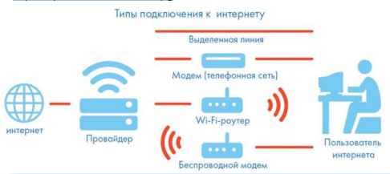

ГЛАВА 4 «Работа в интернете»
По сути, интернет – это окно в мир. Он объединяет миллиарды компьютеров в мире в одну сеть. Они связаны друг с другом проводами, которые напоминают сеть или паутину. Поэтому интернет еще называют Всемирной сетью или Всемирной паутиной.
Интернет позволяет держать связь со всем миром не выходя из дома.
Каждый человек может рассказать о себе в интернете, найти единомышленников, узнать информацию по любому интересующему вопросу. Интернет – это колоссальное хранилище знаний, средство
обмена личным опытом, и еще свободное средство массовой информации, где каждый может высказать свое мнение.
Типы подключения к сети интернет

Компьютер можно подключить к интернету через телефонную сеть.
1) Для этого подключается специальное устройство – модем а модем через провод – к компьютеру.
2) Подключиться к интернету можно по выделенной линии. Для этого в ваш дом проводят кабель и подсоединяют к компьютеру.
Подключение к интернету по проводам считается более качественным и надежным соединением с высокой скоростью передачи данных.
3) Можно подключить компьютер к интернету по беспроводной сети Wi-Fi (Вай-Фай). Для этого в вашей квартире должно быть установлено специальное оборудование.
В зоне его действия 50–100 метров можно подсоединить к интернету любое устройство поддерживающее функцию Wi-Fi: мобильный телефон, ноутбук или компьютер.
Беспроводное подключение – одно из самых популярных. Во многих кафе, торговых центрах, учреждениях, гостиницах есть зоны бесплатного Wi-Fi.
Вы можете прийти в такие места со своим ноутбуком, подключить его к интернету. И выходить во Всемирную сеть бесплатно.
4) Широкое распространение получил мобильный интернет.
Мобильные операторы предлагают беспроводные модемы. На вид они напоминают флэшку. Только внутри нее находится обычная сим-карта мобильного телефона.
Устройство вставляется в соответствующее гнездо в компьютер (ноутбук).
5)Также можно подключить интернет к ноутбуку и компьютеру черезсмартфон (мобильный телефон), поддерживающий доступ в интернет. Для этого в настройках смартфона нужно выбрать режим модема
Чтобы подключить интернет дома, вам необходимо обратиться в специальные организации к интернет-провайдерам.
Подключение к интернету – платная услуга. Как правило, сумму оплачивают ежемесячно на основании договора.
Как выбрать интернет-провайдера
Главное, чтобы у выбранной организации была линия связи в том районе, где вы живете.
Обратите внимание на скорость передачи данных. По проводам информация передается с определенной скоростью. Чем выше скорость, тем быстрее и качественнее ваш компьютер будет скачивать информацию из интернета или показывать фильмы без задержек.
Для начала вполне подойдёт скорость до 10 мегабит в секунду. Вы сможете устанавливать видеосвязь, слушать музыку, скачивать файлы, смотреть видео. Сейчас провайдеры предлагают еще более высокие скорости 200-300 мегабит в секунду.
Оцените надежность организации, предоставляющей услуги по подключению к интернету.
Ознакомьтесь с тарифами. Решите, какой тип подключения вам подходит: проводной или беспроводной. Возможно, рядом с вами пока нет линий интернет-связи, тогда есть возможность подключиться через оператора сотовой связи или телефонную сеть.
Каждая компания работает по определенным правилам и тарифам.
Как и при оплате за обычный телефон, можно платить фиксированную сумму в месяц и при этом не беспокоиться о количествескачиваемой информации.
А есть тарифы, которые рассчитываются исходя из объемов скачанной вами информации. Чтобы понять, что больше подходит, можно выбрать простые тарифы, а в дальнейшем перейти на более подходящий вам тариф.
При подключении домашнего компьютера к сети интернет в вашу квартиру приходят новые возможности. Большую популярность получили комплекты интернет + ТВ.
По одному кабелю обеспечивается и доступ в интернет, и подключение телевидения к кабельным каналам. Вам больше не понадобятся комнатные антенны, исчезнет рябь на экране, любимые каналы можно смотреть в хорошем качестве.
Что такое интернет-браузер
Для выхода в интернет необходима специальная программа. Ее называют «интернет-браузер». В вашем компьютере уже есть установленный браузер: Internet Explorer и Microsoft Edge (в Windows 10).
Есть и другие программы-браузеры. Их всегда можно бесплатно скачать из интернета. Самые популярные: Opera (Опера), Mоzilla Firefox (Мазила Файерфокс), Google Chrome (Гугл Хром), Яндекс.Браузер.
Каждая программа имеет свои возможности, недостатки и преимущества. Но при этом все браузеры имеют примерно одинаковый вид
и составные элементы.
Адресная строка – поле для ввода уникального адреса сайта. Кнопки «Вперед» и «Назад» помогут вернуться на несколько страниц назад или перейти вперед.
Ваше путешествие по Сети имеет свою историю, и браузер хранит ее.
Адресная строка браузера
Основная строка браузера – адресная – находится вверху. Именно здесь необходимо вводить адрес сайта – той страницы, что появится у вас на экране.
У каждой страницы есть свой уникальный адрес в интернете. Именно по адресам, как на почте, и рассортирована в интернете вся информация. Чтобы перейти на сайт, в адресной строке наберите адрес, например, yandex.ru. Затем нажмите кнопку Enter.
Любой адрес имеет свое точное написание. Если вы сделали ошибку, вы окажетесь на другой информационной странице. Любой адрес в интернете пишется слитно, без пробелов.
Части адреса разделяются точкой, никогда не используются в адресе запятые, редко – тире.
Географические домены.
• .ru – Россия
• .рф – Россия
• .ua – Украина
• .by – Белоруссия
• .de – Германия
Тематические домены.
• .biz – бизнес.
• .museum – музеи.
• .info – информационный.
• .com – любая коммерческая организация, объединяющая компании на разных континентах.
• .gov – правительственное учреждение.
Что такое гиперссылки
Все передвижение по пространству интернета, по этой мировой базе данных, построено на гиперссылках.
Например, в научно-популярных книгах, статьях есть сноски со ссылками по той или иной теме на статьи,книги других авторов.
Таким образом, вы всегда можете что-то дополнительно почитать по данному вопросу. Информация в интернете построена по тому же принципу.
Только вам не надо ходить в библиотеку. Достаточно кликнуть левой кнопкой мыши по гиперссылке. В ссылке уже заложен адрес другой страницы.
Гиперссылка – это может быть текст или рисунок, слово, словосочетание или даже целое предложение.
Как правило, они выделены особым шрифтом или цветом. А курсор при наведении на гиперссылку из стрелочки превращается в указатель - руку.
Как скопировать адрес страницы сайта
1. Выделите в адресной строке кнопкой мыши адрес.
2. По выделенному фрагменту кликните правой кнопкой мыши.
3. Выберите «Копировать».
4. Вставить адрес можно в документ в программе Word. Для этого откройте программу, подведите курсор в нужное место, нажмите правую кнопку мыши.
5. Выберите «Вставить»